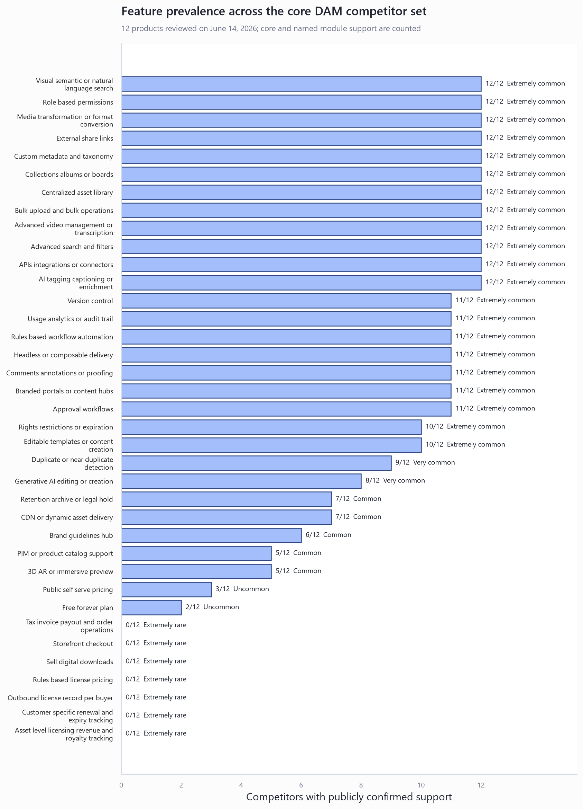

Enterprise content operations
Adobe AEM Assets, Aprimo, Bynder, Acquia DAM, and Brandfolder establish the feature ceiling for governance, workflow, integrations, rights controls, templates, analytics, and content activation.
Market research · June 14, 2026
A current competitor map, normalized feature taxonomy, pricing context, and product direction for a modern digital asset manager with hosted galleries, commerce, and outbound media licensing.
Adobe AEM Assets, Aprimo, Bynder, Acquia DAM, and Brandfolder establish the feature ceiling for governance, workflow, integrations, rights controls, templates, analytics, and content activation.
Frontify, Canto, and Bynder combine DAM with brand guidelines, templates, portals, and controlled content creation. Their strength is brand consistency, not direct media commerce.
Air, Dash, Pics.io, and Filecamp compete through fast onboarding, visual organization, collaboration, unlimited-user or simple-seat offers, and clearer pricing.
Cloudinary, PhotoShelter for Brands, and MediaValet are strong references for programmable delivery, visual media workflows, video, portals, and specialized asset handling.
The list is a strategic benchmark set, not an absolute market ranking. It deliberately includes enterprise leaders and modern tools Geiger is more likely to meet in real buying decisions.
| Product | Market posture | What it offers | Pricing signal | Why it matters to Geiger |
|---|---|---|---|---|
| Adobe AEM Assets | Enterprise suite | AI discovery, governance, Dynamic Media, workflow, integrations, analytics, content activation | Prime and Ultimate, quote only | Enterprise capability ceiling and ecosystem integration reference |
| Aprimo | Enterprise content operations | DAM, workflow, metadata, AI agents, planning, performance, rights-oriented governance | Configured by users and modules | Best reference for joining DAM with operational workflow |
| Bynder | Enterprise brand DAM | DAM, AI search, workflow, Studio templates, content experiences, brand guidelines | Quote only | Strong benchmark for modular packaging and brand distribution |
| Acquia DAM | Enterprise DAM plus product content | Assets, Entries PIM, Workflow, Portals, Templates, Insights, AI and rights controls | Quote only | Reference for a unified asset, product-data, and portal model |
| Brandfolder | Enterprise brand asset platform | Metadata, collections, portals, versioning, workflow, templates, CDN embeds, analytics | Quote only | Strong reference for polished asset distribution and measurement |
| Canto | Mid-market to enterprise DAM | AI search, portals, workflows, rights management, integrations, video, brand templates | Quote only | Direct feature and usability benchmark for a modern DAM |
| Frontify | Brand management suite | DAM, guidelines, templates, collaboration, rights management, analytics, integrations | Quote only; usage-oriented packaging | Reference for brand governance and controlled creation |
| Cloudinary Assets | Developer and media delivery platform | AI DAM, transformation, workflow, portals, APIs, programmable delivery, PIM/CMS links | Public platform plans plus enterprise DAM | Technical benchmark for transforms, CDN, APIs, and headless delivery |
| PhotoShelter for Brands | Visual media DAM | AI search, sharing, permissions, workflow, video, portals, integrations | Quote only | Reference for high-volume image and media-team workflows |
| MediaValet | Enterprise cloud DAM | Library, metadata, portals, workflow, analytics, integrations, video and specialized media | Quote only; unlimited users | Reference for inclusive user packaging and specialized media support |
| Air | Modern visual workspace | Boards, visual search, AI tagging, versioning, comments, approvals, transforms, integrations | Free plan plus paid tiers | Direct UX benchmark for visual teams and quick adoption |
| Dash | Simple modern DAM | AI search, portals, transformations, integrations, analytics, unlimited users | From $109 per month when reviewed | Important price-to-simplicity benchmark |
The chart counts explicit public support across the 12-product core set. It should be used as a prioritization aid, not as a procurement scorecard: an unconfirmed feature may still exist behind an enterprise sales process.

| Prevalence | Definition | Typical capabilities | Geiger treatment |
|---|---|---|---|
| Extremely common | 10-12 of 12 | Library, metadata, search, bulk operations, collections, sharing, roles, AI enrichment, integrations, media transforms, workflow | Required for credibility; simplify and execute well |
| Very common | 8-9 of 12 | Duplicate detection, guidelines, generative AI, richer governance | Prioritize based on target customer and implementation cost |
| Common | 5-7 of 12 | Dynamic delivery, PIM links, 3D support, retention/legal hold | Package as business or specialist capabilities |
| Uncommon | 2-4 of 12 | Transparent self-serve pricing and free plans | Use as a go-to-market advantage, not only a product feature |
| Extremely rare | 0-1 of 12 | Store checkout, paid downloads, rules-based license pricing, outbound license ledger, license income and royalty tracking | Potential differentiation wedge after the core DAM is reliable |
Leading DAMs already offer branded portals, public collections, and controlled downloads. Geiger should not describe the planned gallery merely as a portal. The differentiated product is a collection-to-market workflow:
Licensor, licensee, contacts, organization, gallery, order, licensed assets, bundles, creators, rightsholders, and revenue-share participants.
Exclusive or non-exclusive, usage type, media, channels, territory, language, audience, purpose, placement, modification, attribution, sublicensing, AI-training rights, and prohibited uses.
Issue date, start date, expiry, embargo, renewal option, termination, grace period, asset conflicts, territory conflicts, and automated availability checks.
Currency, one-time fee, royalty rate, minimum guarantee, revenue split, tax, discounts, refund state, invoice, payment schedule, payout, and recognized income.
Signed agreement, order receipt, usage reports, proof of attribution, model/property releases, amendments, audit log, takedown state, and compliance notes.
Permitted rendition, watermarking, download limit, secure URL, delivery events, license certificate, buyer account, and revocation state.
The market offers a useful anchor range, but most enterprise vendors hide prices. When reviewed, Filecamp published $29/$59/$89 monthly plans, Dash started at $109 per month, Pics.io started at $100 per month, and Cloudinary and Air offered free entry points. Enterprise products mostly required a quote and often separated modules, users, storage, portals, or AI usage.
Use a simple internal relevance model before setting Geiger prices:
Plan relevance = baseline coverage + target-workflow fit + differentiation + service limits clarity - operational friction
Score features only when they are usable in the plan being priced. A feature hidden behind an add-on should not receive the same score as an included feature.
| Score component | Suggested weight | What to measure |
|---|---|---|
| Credibility baseline | 35% | Library, metadata, search, collections, sharing, roles, versions, previews, transforms |
| Workflow fit | 25% | Approval, comments, portals, rights checks, automation, integrations |
| Differentiation | 25% | Gallery commerce, outbound licenses, renewal controls, asset income analytics |
| Commercial clarity | 15% | Transparent limits, included users, storage, AI credits, bandwidth, fees, and support |
This is public-source product research as of June 14, 2026. It is suitable for product planning, not for a final vendor procurement decision or legal design. Enterprise feature availability and packaging may differ by contract. Licensing terms, tax treatment, royalties, and merchant-of-record responsibilities require specialist legal and accounting review before implementation.
Detailed source links and evidence notes are in sources.md. The reusable comparison data is in feature_matrix.csv.